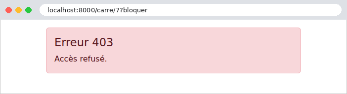
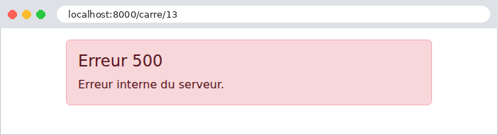

7. Le cycle de vie d'une requête
Entre l'arrivée d'une requête et le départ de sa réponse, [Django] enchaîne plusieurs étapes, et l'application peut intervenir à chacune d'elles. Nous avons déjà rencontré plusieurs de ces points d'intervention : les middlewares et leur méthode [__call__] (exemples 03, 12, 16, 23), leurs méthodes [process_exception] (exemples 08 et 12) et [process_view] (exemple 21), les convertisseurs de routes (exemple 12). Ce chapitre les réunit dans un seul exemple, qui affiche dans la console un message à chaque étape, pour en observer l'ordre :
-
- le signal [request_started] : la requête vient d'arriver. Un signal est un avis, émis par [Django] à un moment précis, que des fonctions de l'application, les récepteurs, peuvent recevoir. Ils ne peuvent pas agir sur la requête : ils sont prévenus, c'est tout ;
-
- la méthode [__call__] des middlewares, avant l'appel de [get_response] : les middlewares sont traversés dans l'ordre du réglage [MIDDLEWARE]. Le routage n'a pas encore eu lieu : un middleware ne connaît pas encore la vue qui traitera la requête. Il peut aussi répondre lui-même, sans appeler la suite : ni les middlewares suivants, ni la vue ne sont alors appelés ;
-
- le routage : une fois tous les middlewares traversés, [Django] cherche la route qui correspond au chemin demandé (exemple 02) ; les convertisseurs des paramètres de route (exemple 12) sont appelés à ce moment. Si aucune route ne correspond, c'est une exception [Http404] (404) ;
- 3 et 4. la méthode [process_view] des middlewares, dans l'ordre du réglage : la vue a été choisie, mais pas encore appelée. Un middleware connaît alors la vue et ses paramètres ; il peut laisser faire (rendre [None]), répondre à la place de la vue, ou lever une exception ;
-
- la vue, et le gabarit qu'elle fait fabriquer ;
- x. la méthode [process_exception] des middlewares, si la vue a levé une exception, dans l'ordre inverse du réglage. Le premier qui fournit une réponse arrête la recherche. Si aucun n'en fournit, [Django] fabrique lui-même la réponse d'erreur : sa page détaillée en mode debug, ou la page d'erreur de l'application, fournie par les vues [handler400], [handler403], [handler404] et [handler500] (voir plus loin). Une exception levée ailleurs (dans le [__call__] ou le [process_view] d'un middleware, dans le routage) ne passe pas par [process_exception] : [Django] la transforme en réponse d'erreur à la sortie du middleware en cause ;
- 6 et 7. la méthode [__call__] des middlewares, après l'appel de [get_response], dans l'ordre inverse du réglage : la réponse est prête, et chaque middleware peut la modifier (ajouter un entête, un cookie) ;
-
- le signal [request_finished], émis après l'envoi de la réponse au navigateur. Les récepteurs ne peuvent plus changer la réponse : ils servent aux traitements qui peuvent attendre (fermer les connexions à la base de données, c'est ce que fait [Django] lui-même), sans faire patienter l'utilisateur.
C'est l'équivalent des filtres de [Java] et des intercepteurs de [Spring MVC], des filtres d'action d'[ASP.NET Core MVC], des fonctions [before_request] / [after_request] de [Flask], des middlewares de [Laravel], et des écouteurs d'événements de [Symfony]. Par rapport à ces derniers, la différence est de structure : un middleware enveloppe la suite du traitement (il appelle [get_response], et voit donc la requête avant et la réponse après, dans le même code, comme les poupées russes de l'exemple 03), alors qu'un écouteur réagit à un événement, et qu'il faut écouter deux événements pour agir avant et après l'action. L'ordre des middlewares, lui, est celui de la liste du réglage [MIDDLEWARE], et non un nombre : c'est plus simple à lire, mais il faut connaître les contraintes d'ordre des middlewares de [Django] (la session avant l'authentification, par exemple ; la documentation de [Django] les indique).
7.1. Exemple 24 : les étapes du traitement d'une requête
L'application n'a qu'une vue, qui calcule le carré d'un entier : [/carre/7]. Selon l'URL, elle réussit, ou elle échoue de différentes façons. Les messages sont écrits dans la console du serveur par une petite fonction :
[print] écrit sur la sortie standard, par défaut ; le paramètre [file=sys.stderr] l'envoie sur la sortie d'erreur, là où [Django] écrit ses propres messages : les deux s'afficheront ainsi dans l'ordre où ils sont produits. (Une vraie application utiliserait le module [logging] de [Python], que [Django] configure par son réglage [LOGGING] : l'étude de cas le fait.)
7.1.1. La configuration : config/settings.py
- ligne 9 : [ALLOWED_HOSTS] est rempli, pour que l'on puisse passer l'exemple en mode production ([DEBUG = False]), et voir les pages d'erreur de l'application (voir plus loin) ;
- lignes 23-28 : quatre middlewares, dans l'ordre où la requête les traverse.
7.1.2. Avant et après tout le reste : les signaux
- ligne 3 : les deux signaux de [Django] qui encadrent chaque requête ;
- lignes 12-15 : le décorateur [@receiver] branche la fonction [debut] sur le signal [request_started] : elle sera appelée chaque fois que le signal est émis. Un récepteur reçoit l'émetteur du signal ([sender]), puis des paramètres nommés, propres à chaque signal ; [**kwargs] recueille ceux qu'il ne nomme pas, ce que la documentation de [Django] exige (un signal peut recevoir de nouveaux paramètres dans une version future). [request_started] fournit [environ], le dictionnaire WSGI de la requête (exemple 01) : l'objet [HttpRequest] n'existe pas encore. Le récepteur affiche la méthode et le chemin, puis le message n° 0 ;
- lignes 20-25 : le message n° 8, quand tout est fini, avec la durée mesurée par le chronomètre (voir plus loin), si la mesure a commencé.
[Django] émet d'autres signaux : avant et après l'enregistrement d'un modèle de l'ORM ([pre_save], [post_save]), à la connexion d'un utilisateur ([user_logged_in])... et l'application peut définir les siens. Un récepteur doit être branché au démarrage de l'application, avant la première requête. L'endroit prévu pour cela est la configuration de l'application :
- lignes 6-7 : la configuration d'une application est une classe qui hérite de [AppConfig], rangée par convention dans le module [apps.py] de l'application, et que [Django] trouve lui-même. [name] est le nom du paquet de l'application. C'est aussi là qu'on donnerait à l'application un nom lisible ([verbose_name]) ;
- lignes 11-12 : [Django] appelle la méthode [ready] une fois, au démarrage, quand toutes les applications sont chargées. L'importation du module [signaux] y suffit : ses décorateurs [@receiver] branchent les récepteurs en s'exécutant. L'importation est faite dans la méthode, et non en tête du fichier, parce qu'un module qui utilise les modèles de l'ORM ne peut pas être importé avant que les applications ne soient chargées. Le commentaire [# noqa: F401] demande aux outils de vérification du code de ne pas signaler un import « inutilisé ».
7.1.3. Avant et après la vue : le middleware Journal
- lignes 14-22 : le premier middleware du réglage : il voit passer la requête avant tous les autres (message n° 1), et la réponse après tous les autres (message n° 7), avec son code ([status_code]). Il ne connaît pas la route, puisque le routage n'a pas encore eu lieu. On l'utilise pour des traitements qui concernent toutes les requêtes : journalisation, prise en compte d'un proxy (l'étude de cas en parle, à propos de l'adresse IP des clients)...
7.1.4. Le routage : calcul/convertisseurs.py
Un convertisseur de route (exemple 12), qui écrit le message n° 2. Il accepte n'importe quel segment (l'expression [[^/]+] : un ou plusieurs caractères qui ne sont pas des barres obliques), et le convertit en entier, ou en [None] s'il n'en est pas un : contrairement au convertisseur [int] (exemple 02), qui rendrait une page 404 pour [/carre/abc], c'est ici la vue qui décidera. Le fichier [config/urls.py] l'enregistre sous le nom [entier] :
- lignes 18-21 : les vues des pages d'erreur, présentées plus loin.
7.1.5. Après le routage : le middleware Bloquer
Revenons au fichier [calcul/middleware.py] :
- lignes 26-39 : le deuxième middleware n'agit que dans sa méthode [process_view], après le routage. [request.resolver_match] décrit le résultat du routage (exemple 16) : le nom de la route ([url_name]), la vue, ses paramètres. Message n° 3 ;
- lignes 36-38 : le paramètre [?bloquer] de l'URL provoque une erreur 403 (Forbidden, accès refusé) : l'exception [PermissionDenied] interrompt le traitement ; les [process_view] suivants et la vue ne sont pas appelés.
7.1.6. Avant la vue : le middleware Chrono et le décorateur @chronometre
Nous voulons chronométrer certaines vues seulement, celles qui le demandent. Il suffit de les marquer, par un décorateur de notre invention :
- lignes 27-29 : un décorateur qui ne remplace pas la vue : il lui ajoute un attribut, [chronometre], et la rend. En [Python], une fonction est un objet, auquel on peut ajouter des attributs. C'est ainsi que [Django] marque lui-même certaines vues : [@csrf_exempt] (exemple 18) ajoute l'attribut [csrf_exempt], que [CsrfViewMiddleware] lit dans sa méthode [process_view] ;
- ligne 8 : la mesure du temps doit passer de [process_view] au signal [request_finished]. Or le serveur traite plusieurs requêtes à la fois : une variable de module ordinaire serait partagée par toutes. Un objet [threading.local] a des attributs propres à chaque fil d'exécution (thread) : chaque requête, traitée dans son propre fil, a sa propre heure de départ ;
- lignes 11-22 : le départ et l'arrêt du chronomètre. [time.perf_counter_ns()] est une horloge précise, en nanosecondes, faite pour mesurer des durées. [getattr(objet, nom, défaut)] rend l'attribut d'un objet, ou la valeur par défaut s'il n'existe pas : le chronomètre peut ne pas avoir démarré dans ce fil. La durée est rendue en millisecondes.
Le middleware qui lit la marque, dans le fichier [calcul/middleware.py] :
- lignes 55-61 : dans [process_view], si la vue porte la marque, message n° 4, et le chronomètre démarre. La marque est aussi rangée dans la requête, pour la suite. Le décorateur [@require_GET], appliqué par-dessus [@chronometre] (fichier [calcul/views.py]), n'efface pas la marque : [functools.wraps] (exemple 08) recopie les attributs de la fonction qu'il enveloppe ;
- lignes 49-53 : dans [__call__], après la vue, message n° 6, avec le code de la réponse, si la vue était chronométrée.
7.1.7. La vue : calcul/views.py
- ligne 15 : la vue est marquée de notre décorateur [@chronometre] ;
- ligne 16 : le paramètre [n] est fourni par notre convertisseur ;
- lignes 18-19 : un paramètre qui n'est pas un entier : erreur 400 (Bad Request, requête incorrecte), par l'exception [BadRequest] (exemple 07) ;
- lignes 20-21 : le nombre 13 provoque une erreur « imprévue », une exception [ErreurDomaine] de l'application ;
- ligne 22 : le cas normal. Le gabarit [calcul/resultat.html] affiche simplement le résultat.
7.1.8. La gestion des erreurs : le middleware PageErreur et les vues d'erreur
Le dernier middleware du fichier [calcul/middleware.py] remplace les pages d'erreur de [Django] par la nôtre, pour les exceptions qui sortent de la vue :
- ligne 67 : un dictionnaire dont les clés sont des classes d'exception, et les valeurs les codes HTTP correspondants ;
- lignes 76-79 : [isinstance] (exemple 03) teste si l'exception est de l'une de ces classes (ou d'une classe fille). Si oui, message n° x, avec le code, et [break] arrête la boucle ;
- lignes 80-85 : le [else] d'une boucle [for] est exécuté si la boucle s'est terminée sans [break] : aucune des trois classes ne convient. Une exception [ErreurDomaine] est une erreur « imprévue », transformée en page d'erreur « maison », avec le code 500 (Internal Server Error). Le message de l'exception est affiché dans la console, mais pas dans la page : il peut contenir des détails internes, qui ne regardent pas l'utilisateur. Les autres exceptions sont laissées à [Django] ([return None]) ;
- ligne 88 : la réponse, qui remplace l'exception. Elle repasse ensuite par les middlewares qui précèdent ([Chrono], puis [Journal]), comme une réponse ordinaire.
Ce middleware ne voit que les exceptions levées par la vue. Pour les autres (l'exception [PermissionDenied] du middleware [Bloquer], l'erreur 404 d'une URL sans route), [Django] utilise les vues d'erreur de l'application, déclarées dans le fichier [config/urls.py] par les variables [handler400], [handler403], [handler404] et [handler500] (lignes 18-21), et écrites dans le fichier [calcul/erreurs.py] :
- lignes 9-10 : l'exception de l'application : une classe qui hérite d'[Exception], sans rien y ajouter ([pass] est l'instruction qui ne fait rien : un bloc ne peut pas être vide) ;
- lignes 15-29 : les vues d'erreur reçoivent la requête et l'exception (sauf la vue 500, qui ne reçoit que la requête) ;
- lignes 32-34 : la même page d'erreur pour toutes, avec le code de l'erreur (message n° x).
Il y a une subtilité : en mode debug, [Django] garde ses pages détaillées pour les erreurs 400, 404 et 500, et n'utilise ces vues que pour l'erreur 403. C'est voulu : pendant le développement, la page détaillée est plus utile. Hors du mode debug, les quatre vues sont utilisées. Sans ces vues, [Django] utiliserait, hors du mode debug, ses pages sobres (exemple 03), ou des gabarits de l'application nommés [400.html], [403.html], [404.html] et [500.html] s'ils existent : c'est une autre façon, plus simple encore, de remplacer les pages d'erreur. La page d'erreur de l'application :
- ligne 8 : le DTL n'a pas de dictionnaire écrit dans le gabarit : le message est choisi par une suite de [{% elif %}].
7.1.9. Exécution
Le cas normal, [/carre/7] :

La console du serveur montre les étapes, dans l'ordre :
La ligne entre crochets est le journal du serveur de développement, écrit une fois la réponse envoyée, juste avant le signal [request_finished]. Un accès bloqué, [/carre/7?bloquer] :

Le middleware [Bloquer] a levé une exception dans [process_view] : ni le [process_view] de [Chrono], ni la vue n'ont été appelés. L'exception n'est pas passée par [process_exception] (elle ne vient pas de la vue) : [Django] l'a transformée en réponse par la vue [handler403], puis l'a écrite dans le journal, avec sa pile d'appels (une exception [PermissionDenied] est une erreur du client, que [Django] journalise pourtant de cette façon, au niveau « warning »). La réponse est passée par la seconde moitié du middleware [Journal]. Le signal [request_finished] a été émis, mais n'a rien affiché, la mesure n'ayant pas commencé. Un paramètre qui n'est pas un entier, [/carre/abc] :

Cette fois, la vue a été appelée, avec [None], et c'est elle qui a levé l'erreur 400 ; [process_exception] l'a transformée en page. [Django] a tout de même noté la réponse 400 dans son journal ([Bad Request: /carre/abc]). Une erreur « imprévue », [/carre/13] :

L'exception a été traitée par notre middleware : l'utilisateur voit la page d'erreur « maison », et non la page détaillée, bien que le mode debug soit actif. Enfin, une URL qui ne correspond à aucune route, [/inconnu] :
Le routage a échoué : aucun [process_view], aucune vue. En mode debug, la page 404 est la page détaillée de [Django] (exemple 02). Passons l'exemple en mode production ([DEBUG = False] dans le fichier [config/settings.py]) ; il faut alors lancer le serveur par [python manage.py runserver --insecure], pour qu'il continue de servir les fichiers statiques (exemple 15) :
La page 404 est désormais la nôtre, fabriquée par la vue [handler404] (la console affiche [x. vue de la page d'erreur 404]).
Retenons l'essentiel. Les middlewares sont le bon endroit pour les vérifications communes à de nombreuses vues (l'utilisateur est-il connecté ? a-t-il le droit d'accéder à cette vue ?), et les décorateurs, pour celles qui ne concernent que quelques vues : c'est sur eux que reposera l'authentification, au chapitre suivant. [process_exception] et les vues d'erreur garantissent que l'utilisateur ne voit jamais une page technique, quelle que soit l'erreur : l'étude de cas en tire parti.